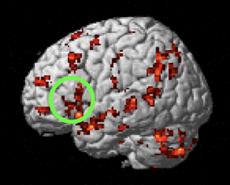
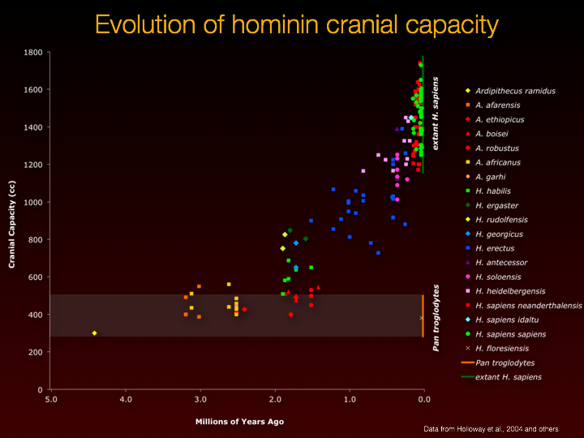
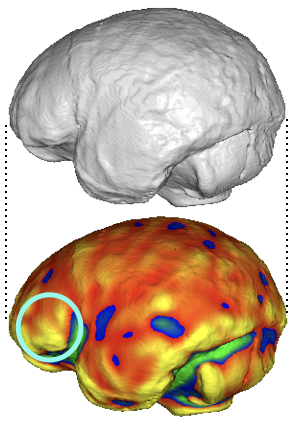
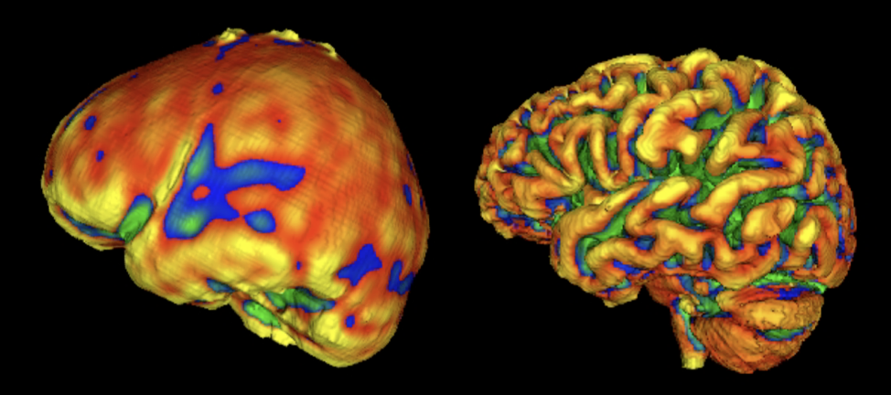
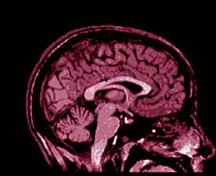
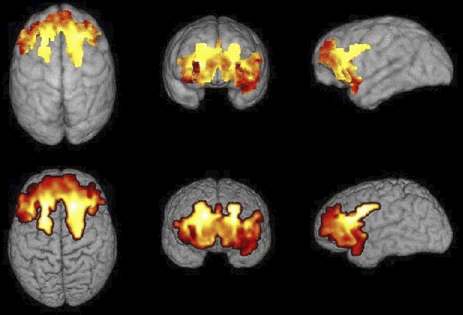
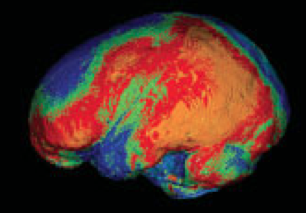
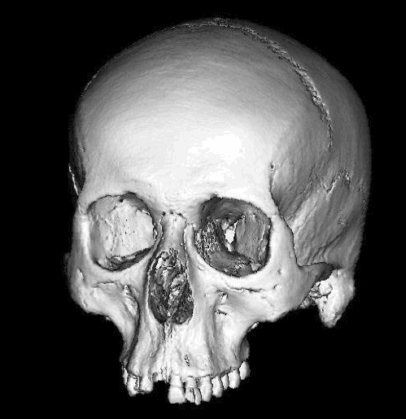

The general focus of our lab research is the evolution of human behavior. Although there has been a great deal of 'informaton loss' that will inevitably limit what we can know about our evolutionary history (just as with any history), there is clearly more that can be learned: We do not know yet the limits of what we can and cannot say about our past. Our best hope of finding the strongest inferences about our evolution will only come from combining as many sources of clues as possible. For this reason, I have explored a variety of research methods: function brain imaging, structural brain imaging, human and comparative primate behavioral research, computational simulations, and a variety of statistical tools. Our work has been extraordinarily helped by a grant of $3.2 millon from the Templeton Foundation: “What Drives Human Cognitive Evolution?”, awarded to the Stone Age Institute, with Co-PI's Nickolas Toth, Kathy Schick, Colin Allen, Peter Todd, and Tom Schoenemann, which ran from December 2015-November 2018

One area of particular focus has been on assessing the possible original evolutionary function of Broca's language area. Anatomically, areas that appear to be homologs of human Broca's areas have been found in apes and monkeys. We can infer from this that its original function was not language, but instead something language-relevant, that would have made it an attractive substrate for the later evolution of language in our particular lineage. We are exploring the hypothesis that the original function might have been to pay attention to (and learn) various kinds of sequential pattern information in the individual's environment. We are investigating this idea by carefully mapping the overlap of lingusitic and non-linguistic funtioning in Broca's area using functional magnetic resonance imaging. In collaboration with Drs. Rob Shumaker and Chris Martin at the Indianapolis Zoo, we are also exploring the same kinds of sequential pattern learning in apes, with the ultimate goal of assessing whether their homologous Broca's areas are also involved in this task. If it is, we will be closer to understanding the evolutionary history of language.

Another area of interest has been in assessing the particular ways in which our brain has changed over our evolutionary history. This can be inferred both through comparative studies of the brains of other species, as well as by studies of the braincases of our fossil ancestors. Interpreting these changes behaviorally requires knowing about how brains mediate behavior, which in turn involves studying brain structure/function in modern humans and (when possible) that of other animals. Language is one human behavior that has played a particularly important role in our evolutionary history, and is likely part of a broader trend towards increasing sociality in our species. The ways in which these behaviors may have evolved, and their likely co-evolution with our brain, constitute a major focus of our research.

One particular area of focus has been on trying to determine what clues might be found on early fossil braincases for important behavioral changes of various kinds - in particular language. Past research has relied on qualitative assessments of the surface of these specimens, but we are applying quantitative tools made possible by 3D imaging (in particular high resolution CT scanning). We are able to mathematically describe the surface curvature of these specimens at each point on the surface, thereby allowing a quantitative assessment of similarities and differences between fossils and modern humans and apes. One area of particular interest has been Broca's Cap (which overlies Broca's language area in humans), with the ultimate goal being to assess the evolutionary changes in this area over time, and to see if this is associated in any clear way with evidence of behavioral evolution, for example: the changes in stone tool technology over time that is documented in the archaeological record.

One key assumption usually made in studies of fossil braincase evolution is that changes we see on the surface actually reflect changes in the underlying brain. This is not an unreasonable assumption, but brains are not identical to skulls, so some degree of 'information loss' is inevitable when tryiing to infer brains from skulls. We are trying to quantify this in modern humans by comparing 3D images of skulls and brains of the same individuals. This will allow us to understand better what to make of the changes on fossil specimens during our evolutionary history.

Another area we have pursued has been to study brain/behavior associations, typically using high resolution MRI to measure neuroanatomical variability, and then looking for possible correlations with various neurospsychological, linguistic, and general behavioral (e.g., "sociality") tasks that either appear to, or are thought to have important evolutionary significance for humans. In collaboration with Dr. James Gee (U. Penn) and Dr. Brian Avants (formerly of U. Penn) we have been using morphometric registration algorithms to quantify variability in anatomy on a voxel-by-voxel basis (sometimes called "voxel-based morphometry"). This research sits at the intersection of neuroanatomy and cognitive psychology, informed by an evolutionary biological perspective.
In particular, we have been interested in the cognitive neuroscience of stone tool manufacturing. We have explored this by assessing brain activity during stone tool manufacturing, to better understand what, if anything, the evolution of stone tool manufacturing tells us about our cognitive evolution, including possibly language. We have pursued this through functional brain imaging of expert flintknappers watching videos of stone tools being made. An exampe of real-time brain activity of one of our experts can be seen in the video to the left.

Another research direction has been focused on trying to understand the quantitative differences in brain anatomy between humans and other primates. The goal of this is to better understand exactly what changed in our brains during hominin evolution. This work has involved image processing of MRI's of an array of primates and humans. We have also done research on the scaling relationships of brain size with various components of body mass across mammals. In addition to the work with MRI, we have collaborated with Dr. Ralph Holloway, Dr. Janet Monge, and Dr. James Gee on projects comparing endocast morphology of extant human and ape skulls, again using voxel-based registration methods.

We have also investigated possible relationships across primates between endocranial morphology and various interesting behavioral attributes, such as social group size, number of vocalizations, degree of tool use, and so forth. To the extent that parts of the endocranial surface does correlate differently with these behaviors, it will strengthen our behavioral interpretations of fossil specimens.

As part of our work on endocranial morphology, Dr. Janet Monge (U. Penn) and Dr. Schoenemann developed the Open Research Scan Archive (ORSA), in which they CT scanned over 5,000 human and primate crania and postcrania, and made these freely accessible for research worldwide. Scan data from ORSA have been used on a significant number of research projects (see the ORSA website for examples).
Another line of research has been attempting to model aspects of cognitive evolution using agent-based computer simulations. The focus here has been on the evolution of language, specifically the interplay between semantic and syntactic evolution, as well as the fossil anatomical evidence relevant to the origin and evolution of language. The goal is to determine if language universals are the result of functional constraints, rather than evolved, innate, species-specific, dedicated brain modules (which I have argued is not evolutionarily likely).
Publications relevant to these topics can be found here.